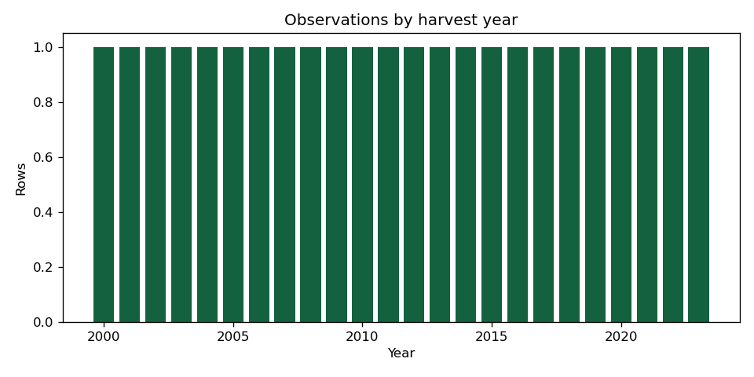
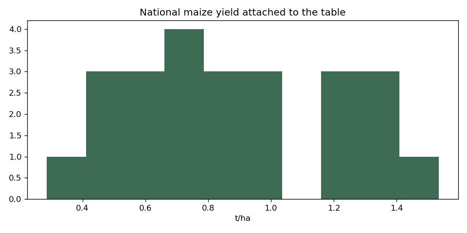
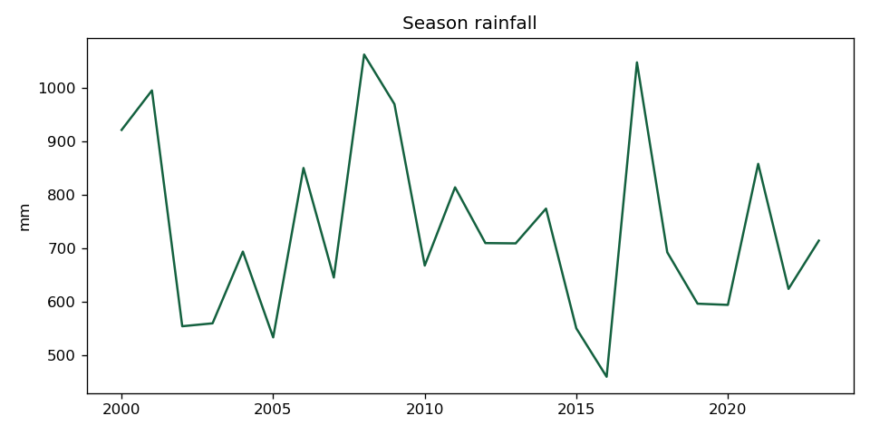
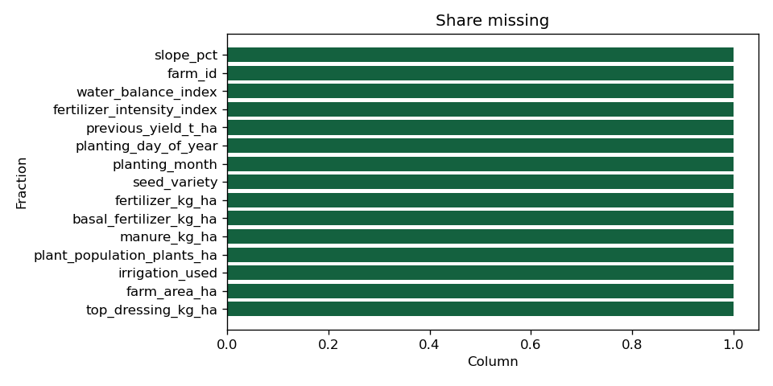

Study area: Macheke, Mashonaland East, Zimbabwe. Boundary status: study_area_approximation.
No authoritative Macheke district polygon was available to download. The box is an approximation around the town of Macheke and is not an official ward or district boundary. Synthetic ward codes are not used.
Season assumption: Summer maize in Mashonaland East is treated as a November-March season that crosses the calendar year. The season label is the harvest year (the year containing January-March). This is a research assumption, not an official Agritex sowing calendar.
Critical period assumption: January and February are treated as the critical reproductive window for this summer maize season. Phenology was not observed on Macheke farms.
Rows: 24. Synthetic rows: 0.
Rows: 24. Synthetic rows: 0.
Yield values: 24. Farm-level yield values: 0.
FAOSTAT national maize yield is joined onto the Macheke grid for context. It is not a survey of Macheke farms. ZIMSTAT and Agritex did not contribute a public machine-readable Macheke table in this run.



